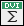

<BODY BGCOLOR="#ffbec9">


</BODY>

<H1>E-prints</H1>
<H3> The support by the National Science Foundation is greatly appreciated</H3>
<UL><LI><A HREF="eprints/tits1.ps">The Tits Alternative for Out(F_n) I: Dynamics of exponentially growing
automorphisms</A> with Mark Feighn and Michael Handel (Annals of Math. <b>151 </b>(2000),
517-623)</UL>
<UL><LI><A HREF="eprints/tits2.dvi">The
Tits Alternative for Out(F_n) II: A Kolchin Theorem</A> with Mark Feighn and Michael Handel</UL>
<UL><LI><A HREF="eprints/tits3.ps">Solvable
subgroups of Out(F_n) are virtually abelian</A> with Mark Feighn and Michael Handel</UL>
<UL><LI><A HREF="eprints/duality.ps">The topology at infinity of Out(F_n)</A> with Mark Feighn (Invent.
Math. <b>140</b> (3) (2000) pp 651-692). For an online copy of the published paper through Springer Link go <a href="http://link.springer.de/link/service/journals/00222/bibs/0140003/01400651.htm">here</a>
</UL>
<UL><LI><A HREF="eprints/handbook.ps">R-trees in topology, geometry, and group theory</A> survey paper about real
trees</UL>
<UL><LI><A HREF="http://www.maths.warwick.ac.uk/gt/GTVol3/paper12.abs.html">Non-positively
curved aspects of Artin groups of finite type</A> Geometry and Topology <b>3</b> (1999), 269-302</UL>

<UL><LI><a href="eprints/vk.dvi"></a><a href="eprints/vk.pdf"></a><i>Van Kampen's
embedding obstruction for discrete groups</i> with Misha Kapovich and Bruce
Kleiner (Invent. math. <b>150</b> (2002) 2, 219-235). For an online copy of
the published paper through Springer Link go <a href="http://link.springer.de/link/service/journals/00222/bibs/2150002/21500219.htm">here</a></UL>

<UL><LI><a href="eprints/final.ps"></a><a href="eprints/final.pdf"></a><i>Proper actions of lattices on contractible manifolds</i>
with Mark Feighn (Invent. math. <b>150</b> (2002) 2, 237-256). For an online copy of
the published paper through Springer Link go <a href="http://link.springer.de/link/service/journals/00222/bibs/2150002/21500237.htm">here</a></UL>

<UL><LI><a
href="http://www.maths.warwick.ac.uk/gt/GTVol6/paper4.abs.html">Bounded
cohomology of subgroups of mapping class groups</a> with Koji
Fujiwara, Geometry and Topology <b>6</b> (2002), 69-89</UL> <UL><LI><A
HREF="eprints/icm.dvi">The topology of Out(F_n)</A> survey paper about
Out(F_n).  There are also <a href="eprints/slides.pdf">slides</a> from
a talk I gave</UL> <UL><LI><A HREF="eprints/notes1.pdf">
Notes on Sela's work: Limit groups and Makanin-Razborov diagrams</A>
with Mark Feighn</UL> <UL><LI><A HREF="eprints/genus.pdf">Counting maps from a surface to a graph</A> with Mark
Feighn</UL> <UL><LI><A
HREF=http://front.math.ucdavis.edu/math.GR/0410198>Limit groups are
CAT(0)</A> with Emina Alibegovic</UL> <UL><LI><A
HREF=http://front.math.ucdavis.edu/math.GT/0603177>Dimension of the
Torelli group for Out(F_n)</A> with Kai-Uwe Bux and Dan Margalit</UL>
<UL><LI><A
HREF=eprints/glasnik.pdf>Quasi-homomorphisms
on mapping class groups</A> with Koji Fujiwara</UL> <UL><LI><A
HREF=http://front.math.ucdavis.edu/math.GT/0702274>A characterization
of higher rank symmetric spaces via bounded cohomology</A> with Koji
Fujiwara</UL>
<UL><LI><A href=http://front.math.ucdavis.edu/0708.1937>The asymptotic geometry of right-angled Artin groups, I</A> with Bruce Kleiner and Michah Sageev</UL>
<UL><LI><A href=http://front.math.ucdavis.edu/0709.0287>The Dimension of the Torelli group</A> with Kai-Uwe Bux and Dan Margalit</UL>
<UL><LI><A href=http://front.math.ucdavis.edu/0804.2619>Quasiflats in CAT(0) complexes</A> with Bruce Kleiner and Michah Sageev</UL>
<UL><LI><A href="eprints/minicourse.pdf">PL Morse theory notes</A></UL>
<UL><LI><A href=http://front.math.ucdavis.edu/0808.3730>A hyperbolic
      Out(F_n)-complex</A> with Mark Feighn</UL>
<UL><LI><A href=http://front.math.ucdavis.edu/0902.0829>Shearing
      coordinates and convexity of length functions on Teichmueller space
</A> with Ken Bromberg, Koji Fujiwara and Juan Souto</UL>
<UL><LI><A href=http://front.math.ucdavis.edu/0905.2360>Some groups of
      mapping classes not realized by diffeomorphisms
</A> with Tom Church and Juan Souto</UL>
<UL><LI><A href=http://front.math.ucdavis.edu/0910.5408>Asymmetry of
      Outer space
</A> with Yael Algom-Kfir</UL>
<UL><LI><A href=http://front.math.ucdavis.edu/1001.0325> A Bers-like
      proof of the existence of train tracks for free group
      automorphisms</A></UL> 
<UL><LI><A href=http://front.math.ucdavis.edu/1006.1939> The
      asymptotic dimension of mapping class groups is finite</A> with
      Ken Bromberg and Koji Fujiwara</UL>
<UL><LI><A href=http://front.math.ucdavis.edu/1104.1474> Geometry of
      Integral Binary Hermitian Forms</A> with Gordan Savin</UL>
<UL><LI><A href=http://front.math.ucdavis.edu/1106.0162> Filling
      boundaries of coarse manifolds in semisimple and solvable
      arithmetic groups</A> with Alex Eskin and Kevin Wortman</UL>
<UL><LI><A href=http://front.math.ucdavis.edu/1107.3308> Hyperbolicity
      of the complex of free factors</A> with Mark Feighn</UL>
<UL><LI><A href="eprints/homological_stability.pdf"> Homological
stability of Aut(F_n) revisited</A></UL>
<UL><LI><A href="eprints/bestvina.feighn..outer_limits.pdf">Outer
Limits</A> with Mark Feighn</UL>
<UL><LI><A href="eprints/acylind-super-short.pdf"> Construction
    of projection complexes, super short version </A> with Ken
    Bromberg, Koji Fujiwara and Alessandro Sisto</UL>
    <p>

